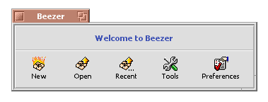

© 2004 Ramshankar
| Welcome Window |
When you fire-up Beezer you will see the Welcome window. This window looks like the one shown below:
 The four buttons' functions are listed below:
Drag 'n Drop
- New: Lets you create a new archive
- Open: Lets you open an existing archive
- Recent: Allows you to choose one of the most recently used archives
- Tools: Gives you a list of available tools for Beezer
- Preferences: Opens up the Preferences window from where you can configure Beezer's settings
Apart from the above functions, the Welcome window also provides an easy way to open archives. You can drop any archive (or set of archives) from Tracker and Beezer will try and open them for you.
| Creating Archives | Extracting Archives |